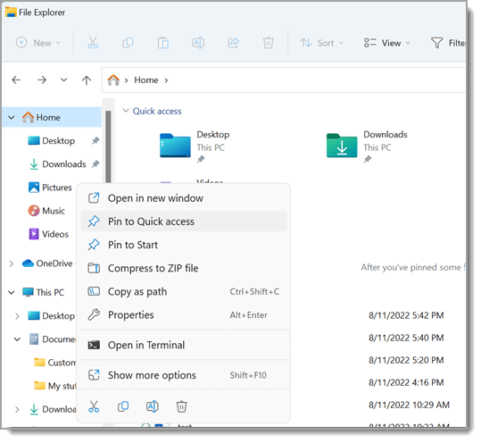
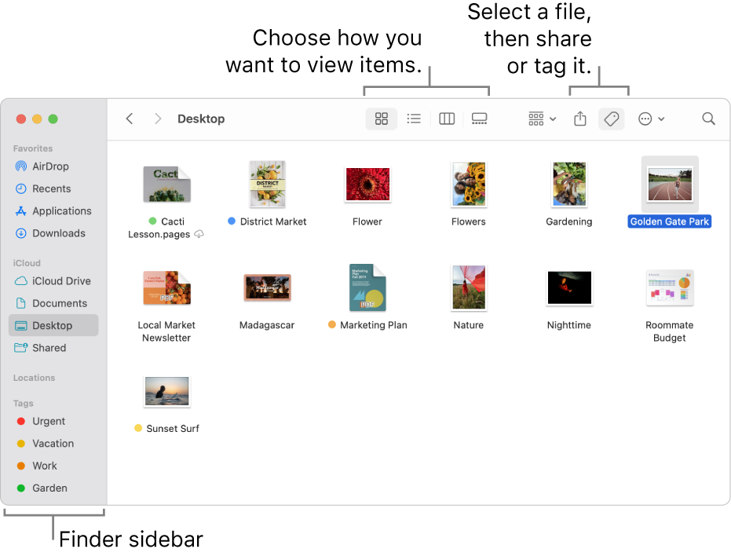
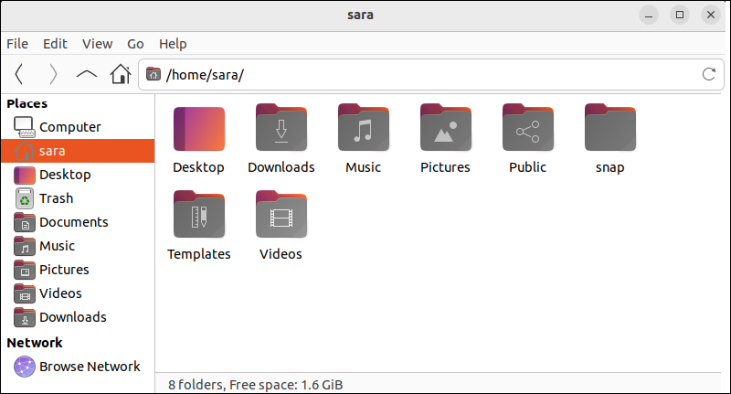
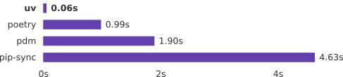
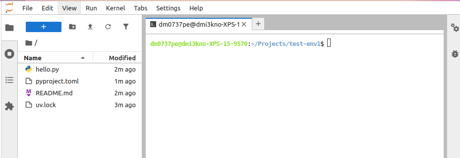
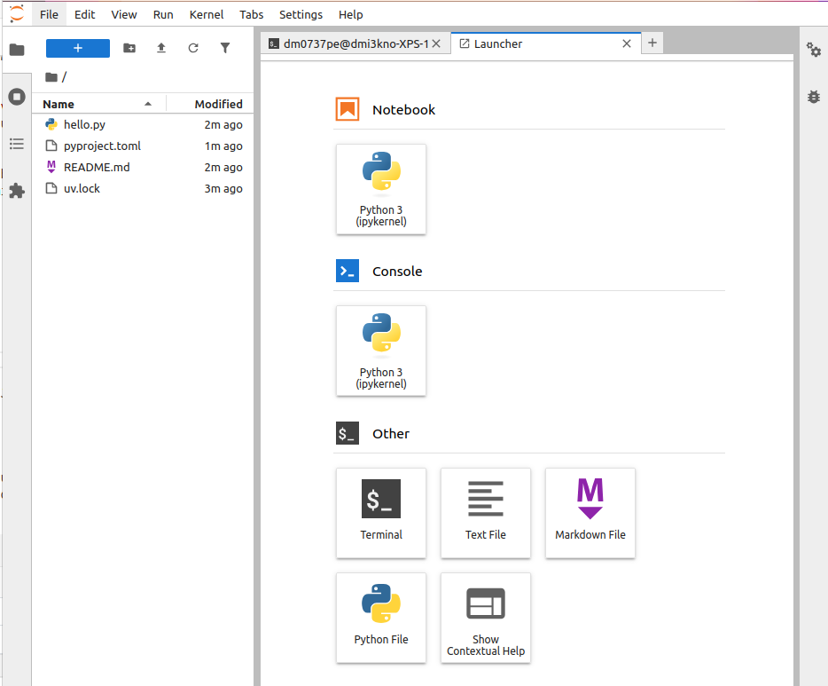
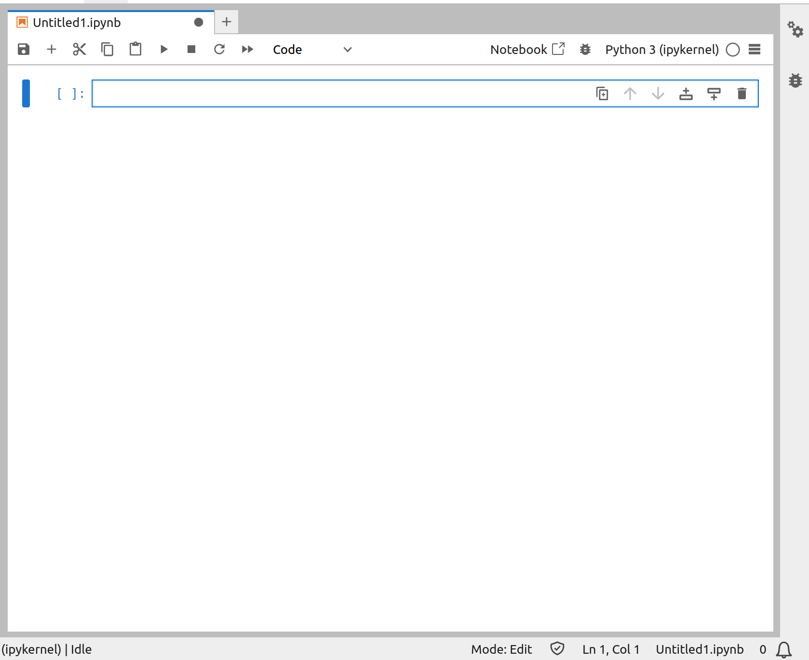

Data Literacy with Python
VIDEO 1 Introduction
LINDA:
Welcome to Data Literacy with Python!
Hi, I am Linda Hartman. I am an instructor of Data Analysis and Statistical Learning at Lund University
DMYTRO:
And I am Dmytro Perepolkin. I help Linda develop interactive classroom experience through code-along sessions and hands-one excercises to help our students get started on their data analysis journey.
LINDA:
Let me ask you something: Can you imagine living in today’s world but being unable to read? Think about it—street signs wouldn’t make sense, advertisements would just be noise, and most of the internet? Completely out of reach.
Now, even with videos and voice assistants everywhere, written text is still the backbone of how we communicate and navigate life. Without it, you’d feel lost.
But here’s the thing: today’s world doesn’t just run on words. It runs on data.
DMYTRO:
Every day, we’re creating over 400 million terabytes of data. That’s every single day. And here’s a wild stat—90% of all the world’s data was created in just the last two years.
This explosion of information is transforming how we make decisions, whether it’s in business, science, or society as a whole. To keep up, you need to know how to make sense of it.
Data isn’t just numbers on a screen—it’s stories waiting to be uncovered. And understanding data has become just as important as being able to read or write.
That’s where this course comes in.
LINDA:
We’re going to teach you how to take raw, messy data and turn it into something meaningful. You’ll work with rectangular data—the kind you find in spreadsheets or databases.
And don’t worry—this isn’t just about crunching numbers. It’s about answering real-world questions, solving problems, and making decisions based on insights you uncover.
By the end of this course, you’ll have the skills to transform data into knowledge.
DMYTRO:
Let’s talk about the tools you need to work with data.
You might be tempted by low-code or no-code solutions—those point-and-click interfaces that make everything seem so easy. And sure, they’re great for quick wins. But when it comes to serious data analysis, they have some big limitations.
Data analysis isn’t just about getting answers—it’s about getting credible answers.
To trust your insights, you need to leave a trail. Think about it—during analysis, you make dozens of tiny decisions:
- Which part of the data should you focus on?
- What variables should you use?
- Which patterns caught your eye?
Every decision shapes your results. And if you—or anyone else—can’t retrace those steps, how can you be sure your conclusions hold up?
That’s why scripting your analysis is so important.
With a script, every step is recorded. You can spot mistakes, refine your work, or pick up right where you left off—even months later. Low-code tools? They don’t give you that kind of transparency.
So, what’s the best language for scripting your data analysis?
LINDA:
The answer is Python.
Python is the world’s most popular programming language, and for good reason. Created in 1990 by Guido van Rossum, Python has become the go-to language for everything from building websites to powering cutting-edge AI. It may not be the fastest language out there, but it’s arguably the most readable. And in today’s data-driven world, readability matters more than ever.
The Python ecosystem for data analysis is enormous. Whatever your question, there’s a good chance Python has a library—or ten—that can help.
Data analysis is unique—it’s less about traditional programming and more about crafting a story with your data. Your code should be clear and intuitive, not just for you, but for anyone who needs to understand your work. And that includes “future you”—because six months from now, you might not even recognize your own analysis without clear documentation!
So, as we dive into this course, we’ll emphasize simplicity, transparency, and readability. Because great analysis isn’t just about crunching numbers—it’s about telling a story that stands the test of time.
DMYTRO:
Data analysis is evolving. Today, some of the most cutting-edge tools are built on high-performance programming languages like Rust, Java, or C++. Why? Because these languages are fast—lightning fast. But here’s the best part: you don’t need to write in these languages to enjoy their benefits.
Modern tools now separate the user interface from the engine. That means the algorithms working behind the scenes are the same, no matter which scripting language you use.
Initiatives like Apache Arrow go even further—they create standardized data formats, making it easy to move between tools and platforms without losing performance or compatibility.
In this course, we’re diving into tools built on Rust—one of the fastest, most efficient programming languages out there. Specifically, we’ll use uv for managing packages and environments and polars for data wrangling.
These tools are not just fast—they’re scalable.
The examples we’ll explore together are small—easy to follow and understand. But don’t let that fool you. The same tools we use here can scale effortlessly to handle datasets with billions of rows, processed across dozens of parallel machines.
What’s even better? The interface doesn’t change.
LINDA:
So whether you’re working on a personal project, academic research, or a large-scale business application, the skills you gain here will translate directly to the real world.
The datasets may be small, but the questions and challenges we tackle are universal. By the end of this course, you’ll be equipped to uncover meaningful insights from your own data, no matter its size or complexity.
Let’s get started on this exciting journey into the world of data literacy!
VIDEO 2 Shell
Before we dive into the thrilling world of data analysis, let’s pause and talk about something fundamental: your computer. That’s right, the device you’re watching this on is more than just a tool—it’s the backbone of your data analysis journey. Set it up well, and it will help you create reliable, reproducible, and stunning analytic projects.
But to unlock its full potential, we need to talk about something that might not look exciting at first glance but is incredibly powerful: the command line—also known as the shell or terminal.
Every operating system has some version of a terminal. Whether you’re on Windows, macOS, or Linux, this is your gateway to greater control over your computer. In the terminal, you don’t rely on menus, buttons, or icons. Instead, you type commands, giving you direct access to your system’s capabilities.
Now, if this is new to you, don’t worry! Below this video, you’ll find instructions on how to locate and open the terminal on your operating system. Take a moment to familiarize yourself with launching it, and then meet me back here.
Once you’re ready, we’ll discuss folders—yes, the simple yet crucial task of organizing your files. If you already know how to navigate your operating system, create new folders, and understand the user directory, feel free to skip ahead to the next video. Otherwise, stick with me, and I’ll walk you through everything you need to know.
Find and open the terminal on your computer. Take that first step toward becoming a power user!
< PAUSE >
Find and open the terminal on your computer.
Now that you’ve found your terminal, it’s time to talk about something fundamental to every data analysis project: files and folders.
Think about how your computer organizes everything you create or download—whether it’s a Word document, an Excel spreadsheet, or a photo. These files are stored in folders, and if you’ve ever saved something important, you know how critical it is to remember where it’s located.
When working with data analysis, you’ll generate a lot of files—scripts, datasets, reports, visualizations—the list goes on. Keeping all of these files organized and in one place is essential to staying productive. You don’t want to waste time hunting through your computer every time you need something.
Here’s the good news: your operating system already provides a great tool for organizing files—folders. Folders, or as they are sometimes called directories, are like containers, and they can even hold other folders. Picture this as a tree, with your main folder as the trunk and subfolders branching out.
Let’s take a moment to explore this on your computer.
- On Windows, you can open File Explorer by clicking the icon on your taskbar or pressing the Windows key + E. Once it’s open, you’ll see something like this:

- On Mac, you’ll use an app called Finder. Just click its icon in the Dock, and you’ll see a view like this:

- On Linux, it’s often just called Files, and the interface may vary depending on your distribution. On Ubuntu, it looks like this:

Inside these interfaces, folders are easy to spot with their distinct icons. Click on one, and you’ll dive inside to see its contents—maybe more files, maybe more folders.
Now, every operating system has a home base for your personal files. This is typically called your Home folder and contains directories like Music, Pictures, Videos, and Downloads. A special folder called Desktop displays its contents right on your screen.
While it’s tempting to store everything on your Desktop for easy access, this isn’t the best long-term solution. A cluttered Desktop can make it harder to stay organized, and let’s be honest—it doesn’t look great either.
Instead, consider creating a dedicated folder for your data analysis projects. For example, you could use your Documents folder or create a new folder called Projects. If your Documents folder is synced to the cloud — like with OneDrive or iCloud — think carefully about whether that’s the right place for large datasets. Cloud storage is precious, and you might want to save that space for smaller files like presentations or text documents. For the project files, we recommend that you pick a location that’s tidy, accessible, and works for you.
Once you’ve chosen your perfect home base, we’ll move on to the next step: learning how to navigate your files and folders using the command line. Trust me, it’s easier than it sounds, and it will make your workflow so much more efficient!
VIDEO 4 uv
Alright, now it’s time to roll up our sleeves and install one of the most exciting tools in modern Python development—uv!
uv is an incredibly fast Python installation and environment manager, written in the high-performance language Rust. This tool burst onto the Python scene earlier this year, and it’s already winning the hearts of Python developers worldwide.
When I say “fast,” I mean lightning fast—orders of magnitude faster than its popular counterparts! Just look at this chart:

Not only is uv fast, but it’s also environmentally friendly. Yes, it’s saving the planet! By reducing the time and energy it takes for data centers to rebuild their test and development environments daily, uv contributes to a smaller carbon footprint.
In this course, we’ll only scratch the surface of what uv can do. But I promise, as you start using it in your real-life projects, your appreciation for this tool—and the Astral team behind it—will grow exponentially
Now let’s get started with the installation. Open your terminal and type the following command.
On Mac or Linux, use the following command after the system prompt:
curl -LsSf https://astral.sh/uv/install.sh | shOn Windown, type the following:
powershell -c "irm https://astral.sh/uv/install.ps1 | iex"Hit Enter, and the installation should begin.
If you already have Python installed, you can also install uv using one of Python’s existing package managers. On Mac, it’s even possible to install it through Homebrew. I’ll include a link to the official documentation with detailed instructions below this video.
Check out uv installation instructions at https://docs.astral.sh/uv/getting-started/installation/
Once the installation is complete, let’s check if everything worked. In your terminal, type uv. You should see output that looks something like this:
uv
#> An extremely fast Python package manager.
#>
#> Usage: uv [OPTIONS] <COMMAND>
#>
#> Commands:
#> run Run a command or script
#> init Create a new project
#> ...If you see that, congratulations! You’ve successfully installed uv.
From now on, we’ll use uv to manage everything, including installing Python itself. Stay with me as we continue setting up your computing environment. I’ll see you in the next section!
VIDEO 5 Python
uv isn’t just a package and environment manager—it also handles Python installations effortlessly. Let’s start by checking if uv can detect an existing Python installation on your system.
In your terminal, run:
uv python findIf uv detects a Python installation, it will return the path to it. This path will also likely give you a clue about the Python version. But if you’re unsure about the version, you can use this command:
uv python list --only-installedNow comes the decision point: Do you want to use your existing Python installation, or would you prefer a fresh installation managed entirely by uv?
Here’s my advice: While you can use the Python installation that uv detects, it’s often a good idea to have a separate Python installation that’s fully under uv’s control. Why? Because Python is often deeply integrated into modern operating systems, and having an isolated installation ensures you don’t accidentally disrupt system-level functionality.
Python environment management has historically been a mess! XKCD even made a famous comic about it.

Yeah, it can get pretty bad. But don’t worry—with uv, that nightmare is a thing of the past. If you’re ready to let uv manage your Python installation, run this command:
uv python installThis will install the latest and greatest version of Python, which will now be entirely supervised by uv. If the installation completes without errors, you’re officially set up with Python! To verify, you can run the uv python find command again, and it should show the new Python installation.
With Python sorted, you’re ready for the next step: setting up your project environment.
As we discussed earlier, every data analysis project should live in its own folder. This keeps things tidy and avoids any cross-contamination between projects. Now, naming your project folder can feel like a challenge—it’s almost an art! Developers joke that naming things is one of the hardest parts of computer science. Why? Because you want a name that’s memorable, descriptive, and easy to type.
So, pick a short, meaningful name without spaces. I’ve decided to call my project data-literacy-project. Once you’ve chosen a name, make sure you’re in the directory where you want to create your project. You can double-check by running pwd (cd on Windows). Now, let’s initialize your project. Type the following, replacing data-literacy-project with your project’s name:
uv init data-literacy-project
cd data-literacy-projectNote that the second command navigates you into the folder (remember, we learned cd foldername). That is because uv init has created a new directory for you with the name you picked. There’s one command I did not tell you about, which allows you to create directories manually. It is called mkdir which stands for “make directory”, followed by the directory name.
If you prefer, you could create the folder yourself and then initialize it with uv. Here’s how that would look:
$ mkdir data-literacy-project
$ cd data-literacy-project
$ uv initEither way, once you’re inside the folder, it’s ready to go! You can explore what uv has created for you by running ls. One of the files you’ll see is pyproject.toml. This is your project’s manifest—a file where uv tracks metadata about your project, including its dependencies (the libraries it needs).
Speaking of dependencies, let’s add some libraries. Run the following commands:
$ uv add gapminder plotnine polars pyarrow great_tables
$ uv add --dev setuptools jupyter ipykernel pyyaml nbformat nbclient jupyterlab-quartoThese commands install several Python libraries we’ll use throughout the course. Here we separated the main packages we need for analysis and visualization (listed here in the first line), from the auxilliary packages used to set up a computing environment, the tools we are going to use. The idea is that your Python code relying on main dependencies may stay the same, while the computing setup may look completely different. In this course we will be using Jupyter notebooks, but the same analysis can be performed in Python script files in an IDE, such as VS Studio Code or Positron.
As you run these commands, you will notice that uv installs more packages than we requested. It pulls in the packages that these specified libraries rely on — it handles all the messy details of software dependecies for you! And thanks to uv, the installation will be lightning-fast.
Curious about what just happened? I want to leave you with a fun little command: it’s called cat. Yes, like the furry little animal! The cat command is a handy way to view the contents of small files directly in your terminal. For larger files, it might take a while to load, but for our purposes, cat is perfect.
Let’s use it to check out the contents of our project manifest file. In your terminal, type:
cat pyproject.tomlWhen you hit enter, you’ll see something like this:
[project]
name = "data-literacy-project"
version = "0.1.0"
description = "Add your description here"
readme = "README.md"
requires-python = ">=3.10"
dependencies = [
"gapminder>=0.1",
"great-tables>=0.17.0",
"plotnine>=0.14.5",
"polars>=1.25.2",
"pyarrow>=19.0.1",
]
[tool.uv]
dev-dependencies = [
"ipykernel>=6.29.5",
"jupyter>=1.1.1",
"jupyterlab-quarto>=0.3.5",
"nbclient>=0.10.2",
"nbformat>=5.10.4",
"pyyaml>=6.0.2",
"setuptools>=77.0.3",
]This file, pyproject.toml, serves as a “manifest” for your project. It keeps track of metadata like your project name, version, and—most importantly—dependencies. Each time you add a new library with uv add, it’s recorded here.
Now, here’s something happening behind the scenes: uv created a hidden folder called .venv. This stands for “virtual environment,” and it’s where all your project’s libraries and dependencies live. Hidden files and folders don’t show up when you run ls— not unless you add the -a flag to the command, so ls -a will, in fact, show that you have this .venv folder in your project directory. But don’t worry that this folder stays hidden, you’ll rarely, if ever, need to open it. uv manages this folder for you, so you can focus on your work without getting bogged down in the details.
Here’s the most important thing to know: the .venv folder is what makes your project self-contained. All your dependencies are stored there, safe and separate from anything else on your system. This is especially useful if you want to share your work later — a topic we’ll cover in the final module of this course.
VIDEO 6 Jupyter
Finally, let’s talk about Jupyter, one of the most transformative tools for interactive data analysis.
Jupyter is more than just a tool — it’s a revolutionary concept. It provides a cross-platform environment for literate programming, where code, text, and results coexist seamlessly. Oh, and here’s a fun fact: the name “Jupyter” stands for Julia-Python-R, highlighting its roots as a language-agnostic platform for fast prototyping, experimentation, and sharing results. Today, the Jupyter ecosystem has grown immensely, with thousands of educators, practitioners, and enthusiasts gathering annually at JupyterCon, a conference dedicated to this amazing technology.
At the heart of Jupyter is the Jupyter Notebook, a special format that allows you to write, execute, and save code, alongside text and rich results like visualizations. Behind the scenes, Jupyter maintains a live connection to the execution language—called a kernel. In our case, that’s Python.
Luckily, the uv tool integrates Jupyter as one of its supported engines, making it simple to launch Jupyter Lab, the interactive environment where we’ll be working. To launch Jupyter Lab, type this command in your terminal:
uv run --with jupyter jupyter labWhen you run this command, your terminal will remain busy while Jupyter Lab is running. It’s a good idea to minimize the terminal and let it work in the background. Shortly after, your default web browser will open, displaying the Jupyter Lab interface.
You’ll see a screen like this:

Click the large blue button in the top left corner—or press Ctrl-Shift-L (or Cmd-Shift-L on a Mac)—to open a Launcher.

In the Launcher, click the “Python 3 (ipykernel)” button under the “Notebook” section. This will open a new tab in Jupyter Lab, where you’ll see an empty document that looks like this:

Now, let’s take a closer look at the Jupyter Notebook interface. A notebook is made up of cells, which can be either code cells or text cells. By default, the first cell is created for you, and it’s set to “code.” The cursor will already be placed in the cell, ready for you to start typing Python code.
Let’s try a quick example!
Type the following code into the first cell:
from datetime import date
print('Today is', date.today())Press Ctrl-Enter (or Cmd-Enter on a Mac) to execute the code. You’ll see the output — today’s date — appear below the cell.
Type and execute the following code in the first cell:
from datetime import date
print('Today is', date.today())Now, let’s get comfortable navigating a Jupyter Notebook. One of the first things you’ll need to master is switching between edit mode and command mode—and trust me, this will become second nature in no time!
Think of edit mode as the space where you actually type and modify code or text inside a cell. To enter edit mode, simply click anywhere inside the cell or press Enter. You’ll know you’re in edit mode when you see a blinking cursor inside the cell, ready for input.
To exit edit mode and return to command mode, either click outside the cell (on the left where the cell number appears) or hit Escape on your keyboard. You’ll notice a solid blue bar on the left—this means the cell is selected, but you’re no longer editing its contents.
Go ahead and try switching between these modes a few times. Get a feel for how it works.
Type entering and exiting the edit mode in the cell you created.
- To enter: click inside the cell or hit Enter
- To exit: click outside the cell or hit Esc
Once you’re in command mode, you can do all sorts of things without clicking around:
- Press B (for below) to insert a new cell below the current one.
- Press A (for above) to insert a new cell above.
Let’s say we want to explain what a piece of code does. To add a description, we first create a new cell below by pressing B. You’ll see a new cell appear, but notice that it’s greyed out—this means it’s waiting for further instructions.
By default, new cells are code cells, meaning they expect Python code. But what if we want to write regular text?
To turn a code cell into a text cell, simply press M (for Markdown). Markdown is a simple formatting language that allows you to write text with styling — things like bold text, italics, and even section headings.
You’ll know a cell is a Markdown cell when the square brackets on the left disappear, and the dropdown menu at the top of the notebook changes to say “Markdown”.
Give it a try and add a new Markdown cell!
Now that you’ve converted a cell to Markdown, it’s time to add some content! Place your cursor inside the cell and start typing. The great thing about Markdown is that you can add styling to make your text more readable and visually appealing.
Here are a few quick formatting tricks:
- To create a heading, start a line with
#sign. The more#symbols you use, the smaller the heading. - To make text italic, wrap it in single stars.
- For bold text, use double stars.
Try it out! Write a short description of what the code above does, and experiment with different formatting styles.
Once you’re done, press Ctrl + Enter (or Cmd + Enter on a Mac) to render the text. You’ll see your formatting instantly applied — headings will be bold and large, italicized text will appear slanted, and everything will look clean and structured.
Add a description of what the code does, use text formatting. Conclude with Ctrl-Enter (or Cmd-Enter on a Mac) to render it.
Need to turn a Markdown cell into a code cell? Hit Y and the cell will now behave like a code cell again. But be careful! If you still have the regular text in the cell, Jupyter will attempt to interpret it as Python code — and you’ll likely see an error. To avoid this, always double-check your cell type before running it.
Once you’ve mastered switching between edit and command modes, navigating through your notebook becomes much easier. Here are a few handy shortcuts:
- Press Esc to exit edit mode and return to command mode.
- Use the arrow keys to move between cells.
- Press A to insert a new cell above the current one.
- Press B to insert a new cell below.
Jupyter Notebooks are designed to be efficient and interactive. Learning these shortcuts will save you time and keep your workflow smooth.
We’ll provide a full list of essential shortcuts below this video. Feel free to reference them as you go!
Now that you know the basics of working with Jupyter Notebook, let’s talk about best practices.
While it’s technically possible to write all your code in a single cell, it’s not a great idea. Instead, breaking your code into smaller, modular sections makes debugging much easier. You’ll also be able to test individual parts of your analysis without rerunning everything from scratch.
But a Jupyter Notebook isn’t just for code — it’s also a powerful tool for documentation. By combining code cells with Markdown cells, you can add explanations, notes, and insights alongside your code. This makes your work easier to understand, both for you and for anyone else who reads your notebook in the future.
Think of your notebook as exactly that—a notebook. A space for both experimentation and documentation.
- Use section titles to organize your work.
- Add Markdown cells to explain your approach.
- Keep your code clean and modular for better readability.
In the final module, we’ll learn how to turn your notebook into a polished, professional report using Quarto. But the best way to get there is to start structuring your work now. Aim for clarity and organization from the beginning.
Jupyter is meant to be interactive, so play around with it!
- Try running some simple arithmetic operations in a code cell.
- Add a Markdown cell below to describe what your code does.
- Experiment with different formatting styles to make your notes more readable.
- Practice switching between cell types and organizing your notebook logically.
The more you explore, the more natural this workflow will feel. So go ahead—start experimenting!
- Add a code cell, write Python code to perform simple arithmetic operations.
- Add comments in a Markdown cell. Adding formatting
- Add structure to your notebook using headers of different levels.
When you’re ready to save your work, simply press Ctrl-S (or Cmd-S on a Mac). Make sure to give your notebook a meaningful name, something that clearly reflects its purpose. And don’t forget to keep the .ipynb file extension — this tells your system that it’s a Jupyter notebook file.
I hope you’re having fun exploring this amazing tool! Jupyter Notebooks are powerful, versatile, and an essential part of the modern data analysis toolkit. Whether you’re exploring datasets, building models, or documenting your findings, this environment gives you the flexibility to do it all in one place.
When you return to Jupyter Lab, finding your work is easy. Just look in the file explorer on the left, click on your notebook, and it will open exactly as you left it—ready for you to pick up where you left off.
When you’re finished, it’s important to shut down Jupyter Lab properly:
Go to File in the top menu. Select Shut Down. A warning will pop up—confirm your choice, and Jupyter Lab will close.
This also releases your command line session, which was running in the background the entire time you were working in your notebook.
Need to jump back in? Restarting Jupyter Lab is just as simple: Open your command line, navigate to your project directory, and type uv run --with jupyter jupyter lab.
Since you’re launching Jupyter Lab from within your project folder, your Python environment will be activated automatically, and you’ll be ready to dive back into your work seamlessly!
And that’s a wrap!
The boring setup part is officially behind us. From here on, it’s all about diving into the exciting world of data analysis — writing code, uncovering insights, and making data come to life.
Onward and upward!